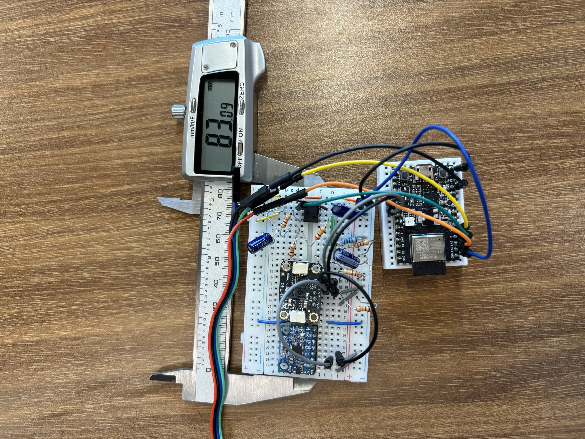

Smart WaterBottle
A water bottle that measures what you drink, the conditions around you, and how much you move, then sets a daily hydration target that shifts with your day. Built solo for a sensors course.
Problem
When I get busy I stop drinking water. Fatigue, brain fog, migraines that can last more than a day.
I tried the existing options. A smart bottle that was too loud to carry daily. Phone apps with fixed targets that were too much on some days and too little on others. Even asking my parents to remind me, which just made my hydration someone else's job.
The part that worked in all of them was knowing the water level and getting a reminder on my phone. The part that never worked was the fixed goal. Temperature, humidity and activity all change how much water you need, so my goal was to measure those three things and let the target move.
Plan
Three measurements, one sensor for each.
Measure the water without touching it
The cheap option was capacitive rods inside the bottle, but the electrodes would sit in the water I drink, the reading drifts with water temperature, and a metal bottle throws it off further. A waterproof ultrasonic sensor reads the surface from above and never touches the water. It cost more and has its own quirks, but they're smaller and easier to predict.
Measure temperature twice, and trust the fusion
A raw thermistor barely changes its signal over the range that matters, so I built a small analog front end, a bridge circuit into an instrumentation amplifier, to stretch that signal into something worth digitizing. A second packaged sensor reads temperature and humidity independently, and the two get fused. Humidity matters more than it sounds, since humid air dehydrates you faster.
Detect drinking with geometry
An accelerometer gives tilt and rough motion. A steady tilt past about 8° counts as a drink, and overall movement scales the activity adjustment. I didn't need precision here, so the cheaper part made sense.
Power it like something a person carries
I went with a rechargeable lithium cell over a disposable 9V, since it fits the housing and doesn't sag as it drains. That meant adding a full charging and protection chain to the board, which felt worth it for a battery living in something I carry around all day.


Trials & Errors
The circuit mostly behaved. The housing did not.

The noise problem
Moving the circuit or bringing other electronics near it put visible spikes on the temperature signal. One capacitor at the right node cut the noise to about a sixth of what it was. Since the signal moves slowly anyway, filtering out the fast noise doesn't cost anything.
Each sensor fails differently, so each got its own filter
- Temperature: Kalman filter. Room temperature doesn't physically jump, so spikes get averaged away. When the reading genuinely changes, like walking from AC into summer heat, the filter follows it instead of rejecting it.
- Water level: median of five. The ultrasonic only fires when the bottle moves, so there's no continuous history to predict from. Taking the median just throws out the outliers.
- Motion: none needed. Averaging tilt and velocity into one number was stable enough.
The housing was harder than the circuit
The goal was a collar that threads between the body and lid of the bottle. The manufacturer's thread is proprietary and the dimensions aren't published anywhere, so I had to reverse-engineer it: learning to use calipers properly, learning tolerances the hard way, and going through more printed iterations than I'd like to admit. This was my first real CAD work.
Biggest lesson: order of operations. I ordered sensors before I understood how hard the housing would be, so the mechanical design had to work around parts that were already locked in. Next time I'd figure out the enclosure first.

Result
I tested everything against known references. Both temperature paths landed inside ±0.2°C.
| Range | Actual | Measured | Error |
|---|---|---|---|
| Near | 30 mm | 30.1 mm | 0.3% |
| Mid | 241 mm | 241 mm | 0% |
| Mid | 165 mm | 165 mm | 0% |
| Condition | Actual | Measured | Error |
|---|---|---|---|
| Ambient | 70.2 °F | 70.4 °F | 0.28% |
| Ambient | 68.4 °F | 68.5 °F | 0.15% |
| Ambient | 74.1 °F | 74.3 °F | 0.27% |
The worst level error is at the near end of the sensor's range, which is where you'd expect it. Notifications reach my phone as a morning target, catch-up nudges, and an evening summary. The moving target is the part the apps I tried couldn't do.
I'm planning a version two. The current build only fits one specific bottle, which works against the whole point, so the rebuild will be smaller and work with any bottle.